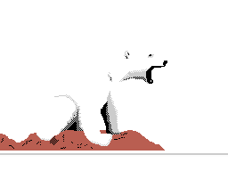
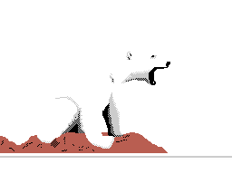

GEMAH!
Bem vindo ao meu humilde site. Sou um estudante de Engenharia de Computação, eu também tenho interesse em jogos e arte. Este é o meu primeiro website em que me dediquei a fazer bem feito(sério).
Onde mais me encontrar:
Facebook: https://www.facebook.com/hian.neiva.3
LinkedIn: https://www.linkedin.com/profile/view?id=381417804
Steam: http://www.steamcommunity.com/id/hian_n/
Tumblr: http://gemahbeart.tumblr.com/
FAQ
- Por quê este estilo horroroso/maravilhoso!?
- Mas foi você quem fez tudo nesse site?
- Where is the english option for this site? I can't read a thing!
Pensei neste estilo para o site pois queria uma idéia mais diferenciada do padrão então resolvi basear a estética dele nas capacidades gráficas do antigo computador MSX.
Sim, eu fiz (quase) tudo. Os mapas, por exemplo, são propriedade da Google, mas os ícones retrôs são meus ;)
I apologize, but due to time constraints and lack of experience I wasn't able to work the way I wanted with this site.
Projetos
- SHMUP experimental em OpenGL
Estado: Concluído
Trata-se de um jogo criado para disciplina de Computação Gráfico oferetada pela faculdade onde relizo o meu curso. O jogo deveria ter três tipos diferentes de inimigos, a nave do jogador modelada e 3D, três tipos de tiros e um chefe sob determinada condição (no caso do jogo que eu fiz, ele aparece após o jogador conseguir uma determinada quantidade de pontos. Como o jogo possui uma qualidade de "Proof-of-concept"/Early Alpha, é bem provável nunca verá a luz do dia...
- Aplicativo de Roteiro: Editor de Personagens
Estado: Abandonado
Um programa que desenvolvi em Java no meu tempo livre, mas que por falta de tempo e motivação eu nunca cheguei a concluí-lo. Ele permitia editar dados referentes a um personagem, aplicável a qualquer mídia ou história. Mas por quê um aplicativo para fazer isso quando se pode fazer tal coisa em editores de texto comuns? Simplesmente porquê ele reduz o escopo do trabalho a aspectos mais definidos do personagem, possibilitando você definir coisas como peso e altura de modo mais exato, deixando as idéias menos classificáveis para a descrição geral dele. Também era permitido fazer o carregamento de uma figura de referência dele.
- Diretrizes de Expeirência de Uso para aplicativos móveis
Estado: WIP
O que escolhi como meu Trabalho de Conclusão de Curso (TCC). Já se perguntou como medir ou avaliar a qualidade da interface de um aplicativo móvel? As vezes o fato e você utilizá-lo bem não significa que ele é bem feito. Muitas vezes um aplicatio possui baixa comunicabilidade, mas é tão simples e fácil de utilizar que as pessoas não se encomodam tando. Ainda sim, existem aplicativos para a plataforma mobile que são péssimos em termos de usabilidade, acessibilidade ou comunicabilidade que poderiam ser infinitamente melhor projetados. A idéia do meu trabalho é ao menos começar a classificar e definir diretrizes para avaliar aplicativos considerando todos os aspectos de Experiência de Uso.
- The King of Monsters (Título Provisório)
Estado: WIP
Um garoto e seus amigos de escola caem em um buraco que se abriu no chão enquanto exploram um antigo prédio condenado após um terremoto. Mas eles descobrem que debaixo do solo há todo um outro mundo com monstros e criaturas fantásticas. Conseguirão eles voltarem para casa? Ou estão condenados aos perigos que encontrarão no mundo subterrâneo?
Trata-se de uma idéia que tenho em mente por um tempo (mais apropriado seria falar que ela vem me incomodando) de um jogo. Pela idéia ainda estar em desenvolvimento eu ainda não comecei a trabalhar ela melhor. Até porque fazer não é nada trivial...
- Arte
Coisa que gosto de fazer no tempo livre ;^)
Currículo
Estudo Engenharia de Computação pelo CEFET-MG (08/2009 - 12/2015). Busco atuar nas diversas áreas de TI, mas meu foco é em Desenvolvimento de Software.
Meu Inglês é de nível fluente, com certificação FCE. Meu espanhol é intermediário.
No momento não possuo estágio ou experiência qualquer, mas busco em função da carga horária do curso e também pela experiência.
Abaixo você pode ver meu currículo na íntegra:
Currículo integral. Imprima separado, por favor.